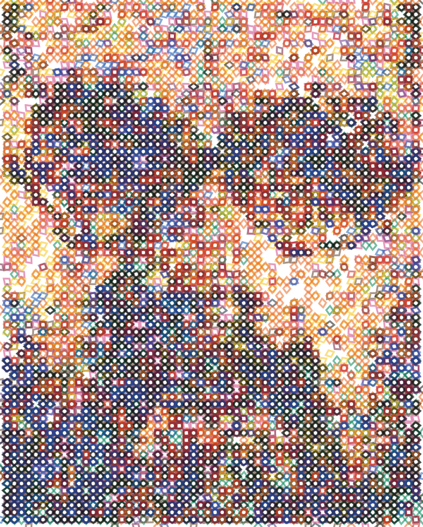
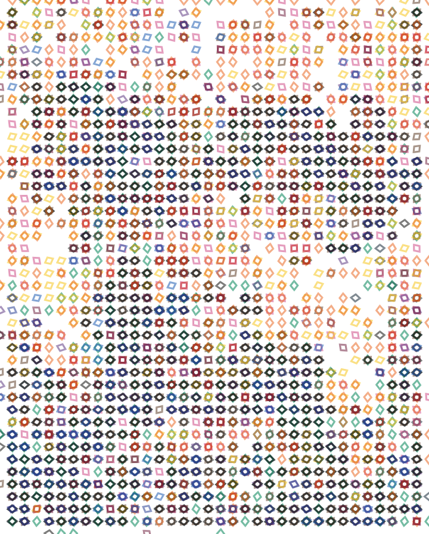
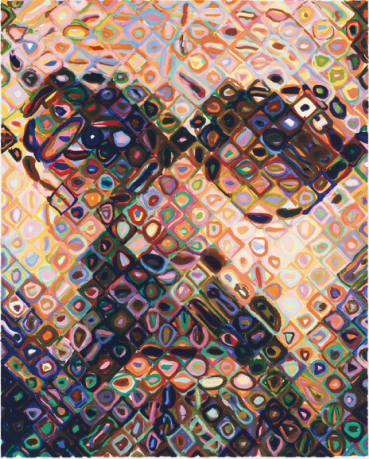
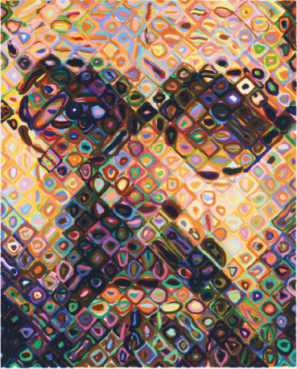

Three editable Geometry Nodes options, using the same verified alpha plates. These pictures are actual exported SVGs.


The same RGB-solved plates, recomposed under two models. The Mixbox image is a diagnostic, not a Mixbox-optimized solve or a calibrated physical paint prediction. SVG display still uses standard SVG compositing.


Mixbox is CC BY-NC 4.0; commercial use has separate licensing terms.